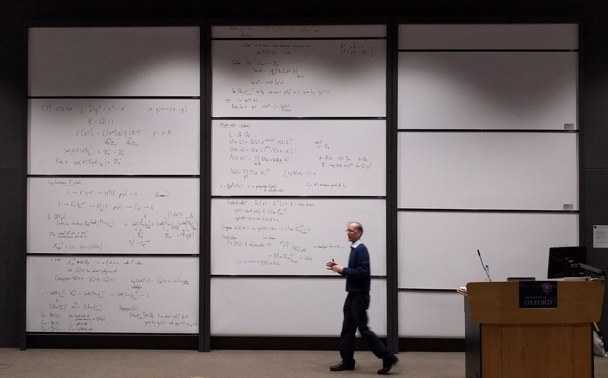

I went to a real math conference today, an in-person conference, not one of the many virtual seminars and conferences that are so prevalent in these pandemic days. I miss travel so much that I just had to lie down on my bed, close my eyes for a few minutes, and imagine that I was about to go far, far away, at least one or two plane rides away, away from home for a few days, dressed in actual clothes, no sweat pants in my suitcase, no day-time pajamas for a change.
If I am going to do this, I want to do it right. The conference of my choice is, of course, on my favorite topics, with plenary talks by some of my favorite mathematicians, and hosted by a university located in a mildly exotic destination that I have never been to. Nowhere too fancy, I don’t need a paradise: just a city I’ve never visited, or a State or country that is in my list of places to go to, or some old famous Institute that I want to visit some day. I plan my trip, and book a flight and a modest room at a hotel near the university that is hosting the event. Excitedly, I pretend to text a few math friends, to see if any of them are going as well. Great news: many of them would not miss such a great conference and will be there too.
During one of my flights to my dream conference, I write the notes for my talk, and rehearse what I will say. Planning a talk is one of my favorite exercises, as it forces me to step back and consider a broad bird’s-eye view of the project. What would others think? What would they find interesting? What parts should I highlight? What examples are best suited for the exposition?
“Oh wow, are you a mathematician?” asks a fellow passenger sitting next to me in the plane. “Yes, I am a university professor and a mathematician,” I answer. Now I wait for the typical cringe-inducing response from a stranger (the mildest one being “oh, I am not a math person”) but, instead, the stranger says “oh wow I loved mathematics in school, I wish I learned more!” And we spend the rest of the flight pleasantly chatting about a variety of cool math topics that satisfy the curiosity of my impromptu flight companion. Even the third person in our same row seems to be curiously listening into our conversation. Ahhh, the power of the imagination is limitless.
When I arrive at my destination, I get on an Uber, and start texting math friends to see if they have arrived yet. After some characteristic indecisiveness, one of us forms some dinner plans, and we enjoy together some delicious foreign cuisine, while we catch up and talk about our teaching, our departments, some math gossip, our students’ shenanigans, and a bit about our latest research projects. Then we move it to a bar where we run into other math people, and we all enjoy a few drinks and laughs, and the conversation is liberally peppered with the nerdiest of math puns that we all enjoy without shame.
Back at the hotel, still feeling the buzz effect of the wine and beer, I review the notes for my lecture one more time, watch a show (whatever I want, no compromising!) and go to sleep. In the morning, I head to the conference building, and enjoy my walk through campus, admiring some of the beautiful architecture (and frowning at some of the more questionable design choices), enjoying the crisp morning air. When I arrive at the hall, the greatest display of fresh-brewed coffee and breakfast items (the good stuff) awaits the conference participants. I proudly display my name badge and begin to mingle, first approaching a group of people where someone I know is talking to others. I introduce myself to the small group of faculty and grad students, and they politely introduce themselves in return.
The organizers do a slow clap to catch our attention: the first lecture is about to begin. It is time to leave everything behind, all my obligations, my parental duties, my long work/home to-do lists, my worries, my goals for this term. Everything stays outside of the lecture hall except the hot cup of coffee that I carry with me (I pretend not to see the “NO FOOD OR DRINKS INSIDE AUDITORIUM” sign, even though it is unavoidable on the way in). I sit, I sip coffee, and enjoy the show. A math friend is sitting next to me, and we exchange brief comments or looks (surprise, puzzlement, horror, amazement, meh) during the talks, and these hints of comradery put me at ease knowing that I am surrounded by my kind of math people. Some talks are enjoyable, some talks are fascinating, some talks are awful, and one or two talks are extremely relevant to my current interests. I love them all, equally so.

At lunch, I join a mixed group of postdocs, students, and faculty, and I slowly work my way through the group, meeting each one of them, paying particular attention to the grad students. I ask them who their advisor is, “oh yes I know them, please say hi,” what are they working on, “oh that’s an interesting question!” how is the research going, have they thought about this other similar question, and are they aware of this paper, it might be helpful. Are they speaking at the conference, if so when, so I make sure I attend their talk.
The conference resumes with more talks, including mine. It is an imaginary conference and an imaginary talk with an imaginary audience, but I am a bit nervous all the same, so I am glad when it is well-received and it is over. The event continues, more math, more socializing, more networking. I am as always amazed at the ingenuity and depth of knowledge of the mathematicians around me, and I try to absorb as much of the amazing math energy they irradiate until I am now once again motivated to go back home, and do more math and prove new results.
I open my eyes. I am still on my bed, in my day-time sweat pants and hoodie, looking at the ceiling. The naive mental exercise has worked at least to some extent, and some motivation is crawling back to me. Enough to go back in front of my computer, open a current LaTeX draft, and think a bit more about a project. I might even have an idea or two of how to, maybe, make some progress.